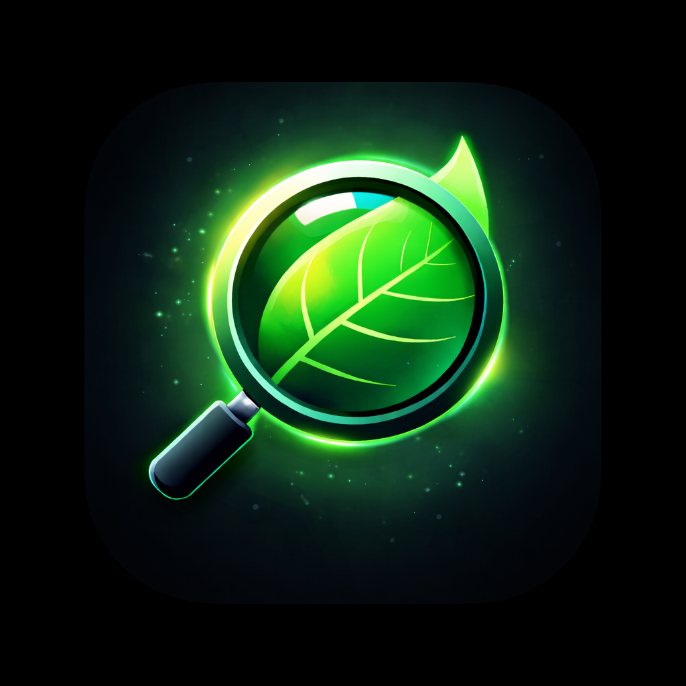
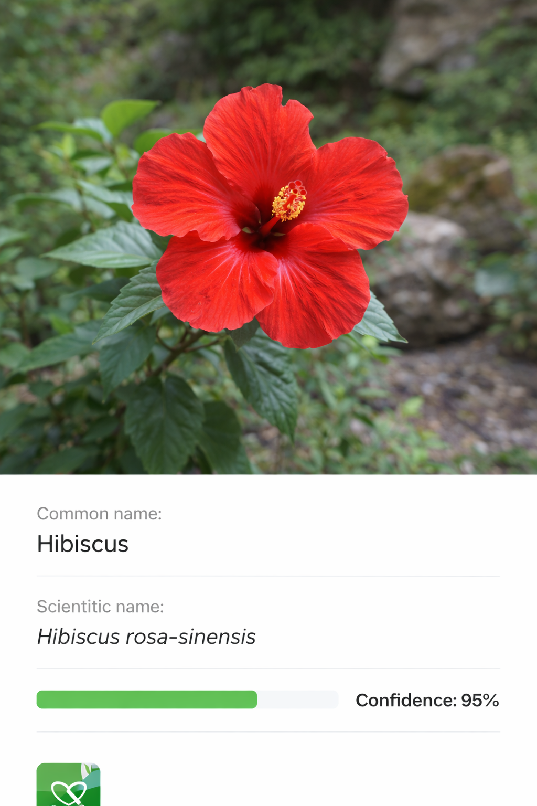

🌿
Instant plant identification
Take a photo and get a match with scientific details, genus, family, synonyms, and confidence score.
Snap a photo, get an instant match, and save it to your gallery. Keep notes, track plant care, and set reminders — all in one clean app.

Inspect Flora is built for speed outdoors, clarity at home, and organization over time.
Take a photo and get a match with scientific details, genus, family, synonyms, and confidence score.
Save inspection results with timestamps so you can revisit them later and build your personal collection.
Add notes to any saved plant. Notes automatically appear in Logs, so the most important records are always easy to find.
Track watering intervals, repotting months, fertilizing months, and a custom reminder time for each entry.
Schedule a reminder with your preferred time. The app will notify you when it’s time to water.
Your saved plants and journal entries are stored locally on your device, giving you simple privacy and full control.
A simple flow designed for real life: outdoors, quick, and reliable.
Tap “Open Camera” and capture a clear photo of a leaf, flower, or plant part.
View common name, scientific name, family, genus, synonyms, and confidence score.
Save it to your gallery and add notes. Entries with notes automatically show up in Logs.
Create journal entries with watering intervals and schedule reminders at a time you choose.
Clean UI, dark mode, and quick actions — built for mobile.




Quick answers to common questions.
Identification requires an internet connection to fetch results, but your saved Gallery, Logs, and Journal entries remain available on your device.
You’ll see common and scientific names, family, genus, synonyms, confidence score, and the inspection timestamp.
Yes. Add notes to any saved plant. Entries with notes automatically appear inside Logs.
Set an interval (days) and a reminder time. The app schedules a notification so you don’t forget watering.
Start identifying plants today. Save results, keep a journal, and track plant care with reminders.